L’application CoQuartier a été conçue pour permettre aux personnes désireuses de participer à la vie de leur quartier, ou de rejoindre et de créer des activités entre voisins.
Le public cible de CoQuartier est incarné par des profils comme Maxime, notre persona : des personnes qui cherchent à s’intégrer ou à renouer avec la vie de leur quartier.
Pour répondre à ce besoin, nous avons conçu une application qui permet aux habitants d’un même quartier de se retrouver autour de diverses activités. Ils peuvent ainsi créer leurs propres événements ou rejoindre ceux proposés par leurs voisins selon leurs centres d'intérêt.

Âge : 30 ans
Métier : Manutantionnaire
Localisation : Saint-Étienne, Carnot
Il sort de moins en moins de chez lui ; il lui est de plus en plus difficile d’aller à la rencontre des autres. De son point de vue, rien ne se passe dans son quartier. Il se renseigne via les réseaux sociaux, mais les informations liées aux activités locales ne lui parviennent pas. Pourtant, Maxime a envie de rencontrer du monde, car sa routine laisse la solitude s'installer.
Rencontrer du monde et participer à la vie de son quartier.
Amener du dynamisme et de la vie dans le quartier et retrouver du lien humain.
A du mal à évacuer ses tracas du travail et se sent seul
Ne connaît pas bien le fonctionnement associatif et comment créer des activités locales (partenaires, budget, aval de la mairie, etc.).
Comment investir Maxime et ses voisins dans la vie local de leur quartier ?
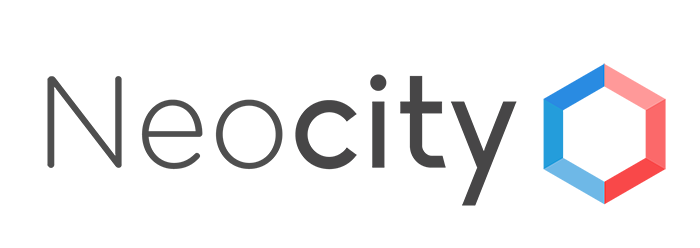
Similitude :C'est une application spécialisée dans l'implication, en proposant des services permettant de gerer les taches administratives.
Difference : c'est un service payant et centré exclusivement sur l'administratif.
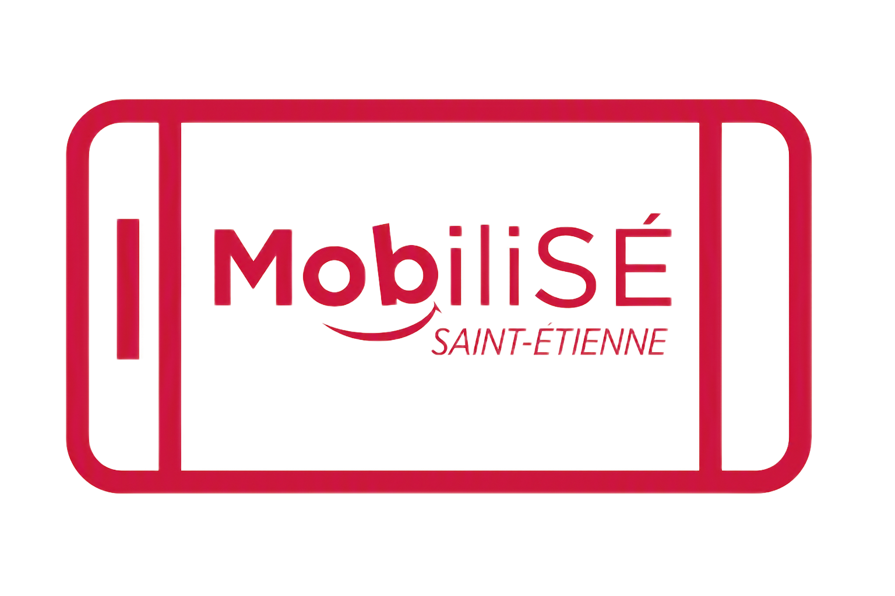
Similitude : une application proposant des services centrés sur l'administratif et des activités.
Difference : l'application gère l'accès aux différents services de transport, est centrée exclusivement sur une ville précise et ne permet pas aux citoyens de créer des activités.
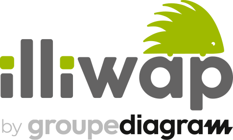
Similitude : l'application Illiwap est celle qui se rapproche le plus de notre objectif et de notre application, car elle possède des fonctionnalités très similaires aux nôtres.
Difference : Illiwap est utilisée pour améliorer la communication entre les élus et les habitants, alors que notre application est centrée sur l'amélioration de la communication et des relations entre les habitants d'un même quartier.

Nous avons créé une application qui permet aux personnes de rejoindre ou de créer des activités diverses et variées entre membres d’un même quartier, ou encore de s’entraider sur divers sujets tels que des activités administratives. De plus, l’un des buts de l’application est de créer des liens sociaux au sein d’un quartier.
Pour cette premiere phase d'evolution, nous avons créé l'ecran d'accueil. Nous avons choisi ces couleurs chaudes ainsi que son ui pour sa beauté qui definira tout le reste de l'application.
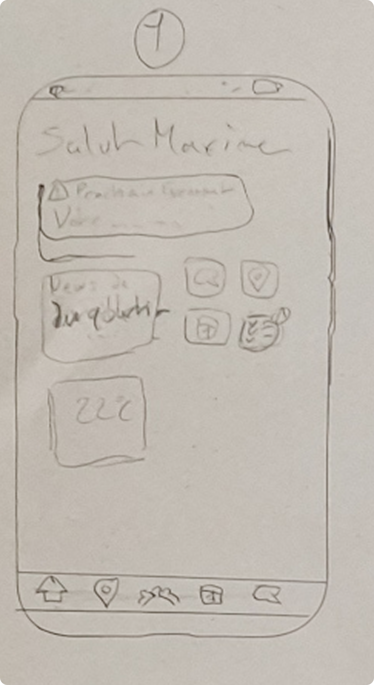
Wireframe
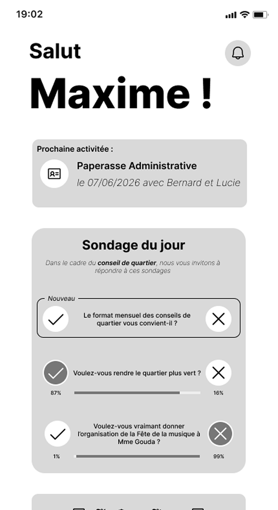
Mid-Fi
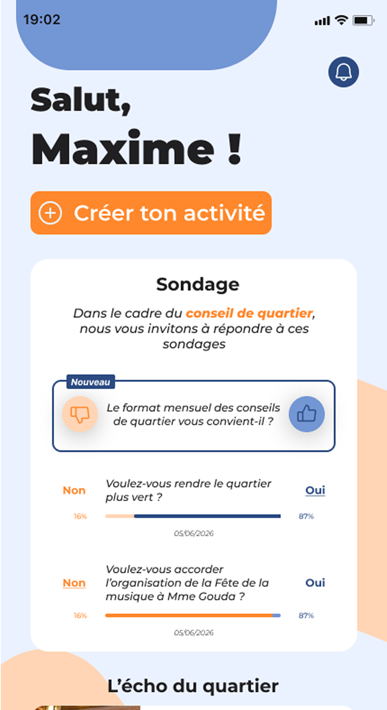
High-Fi
Pour ces ecrans la, nous avons créé l'ecran d'une carte qui sert a trouver toute les personnes autour de toi qui ont le même probleme et les inviter.
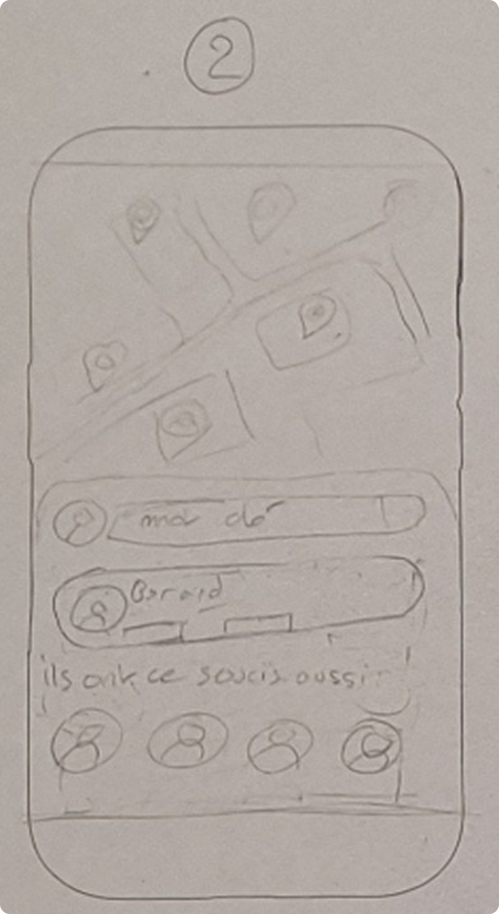
Wireframe
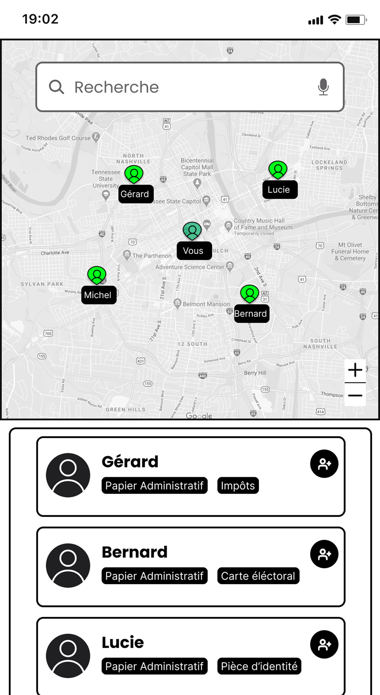
Mid-Fi
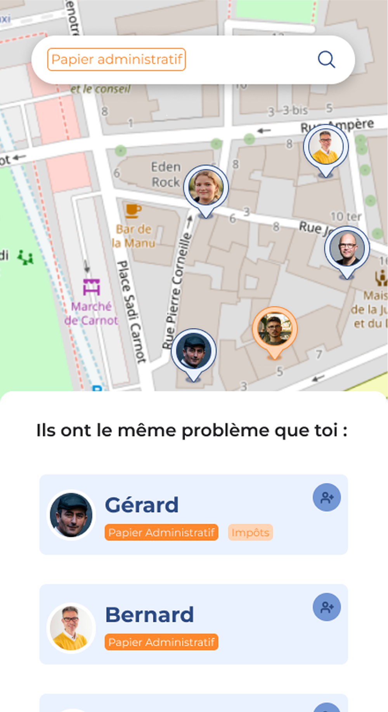
High-Fi
Wireframe

Mid-Fi

High-Fi

Wireframe
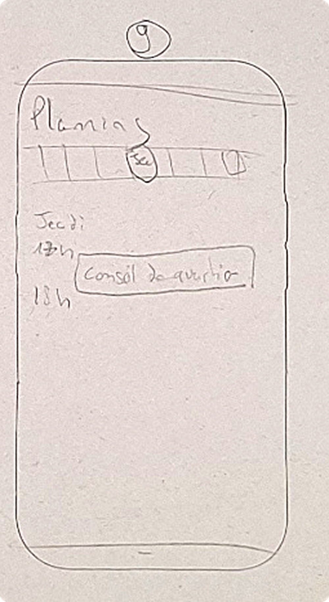
Mid-Fi
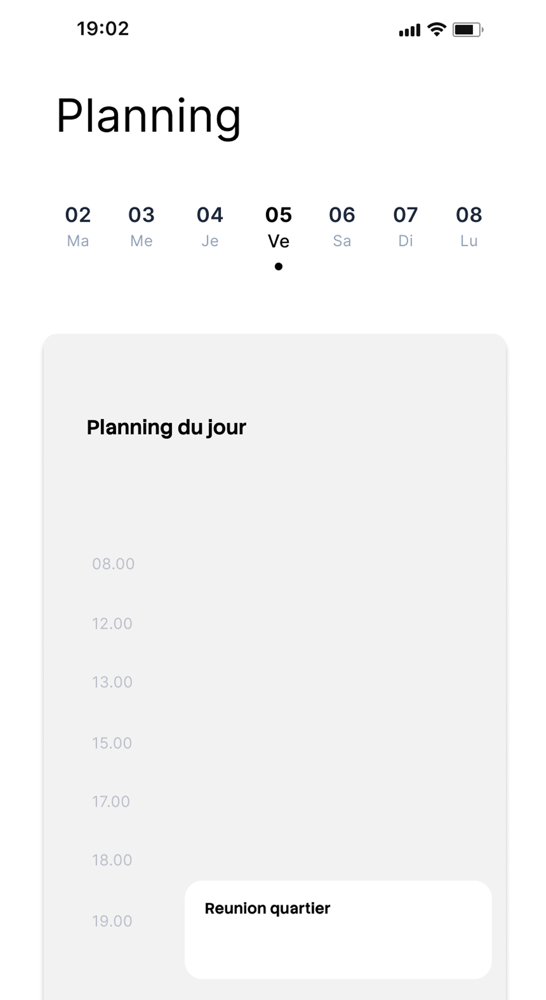
High-Fi
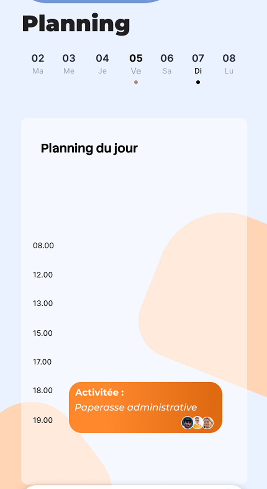
Les tests utilisateurs nous ont permis de mettre en lumière certains défauts lors de la V1, notamment l'ergonomie et la mise en forme de certains boutons ou pages.


Dans le cadre de notre projet, nous remercions l'équipe administrative de La Toile ;
ainsi que nos formateurs :
Ludivine Bocquier qui nous a bien aidé pour la partie UX/UI
Nicolas Ouillon ; qui nous a aidé sur la partie landing page et documentation et pour l'html css et javascript et enfin ;
Audrey Adellon qui nous a coaché et aidé pour le projet en général notamment en apportant sont expertise sur la partie UX/UI et la partie HTML CSS (landing page et documentation).
Nous tenons également à remercier notre promotion pour tous les retours constructifs dont ils nous ont fait part.
Enfin nous vous remercions pour l'attention que vous nous avez fourni.